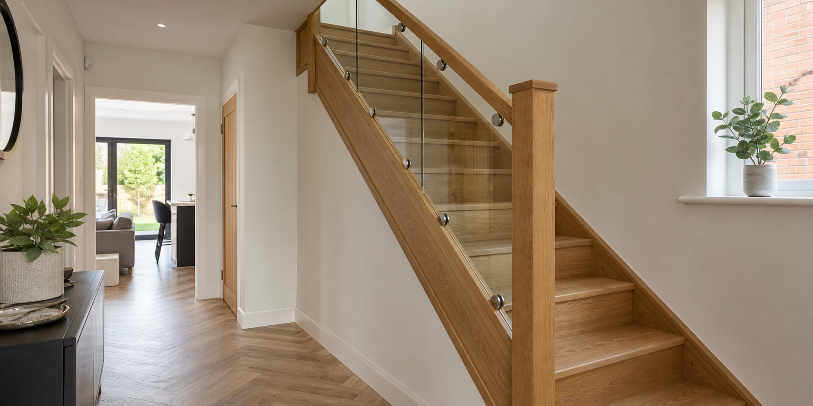

Oak & Glass Staircases
Replace dated staircase details with oak rails, oak posts and clear glass panels for a brighter, more modern hallway.

Staircase renovation Merseyside
Trijoin renovates existing staircases across Merseyside with oak handrails, newel posts, cladding and clear glass balustrades for a brighter, more modern hallway.
Many Merseyside homes can get the visible transformation homeowners want by upgrading the rails, newel posts, glass panels and finishing details rather than starting again with a full replacement staircase.
Popular finishes include oak handrails, oak newel posts, glass balustrades, white and oak combinations, stair cladding and tidy trim work around the hall, stairs and landing.
What Trijoin fits
Replace dated staircase details with oak rails, oak posts and clear glass panels for a brighter, more modern hallway.
Glass panels help open up the staircase and let more light through the hall, stairs and landing.
New handrails, newel posts, base rails and trims give the staircase a more premium, finished feel.
A practical route for homeowners who want the hallway to feel fresher without commissioning a complete staircase replacement.
Merseyside staircase quotes
Send photos from the bottom of the stairs, the top landing and any close-up areas you want changed. Include your Merseyside area and the finish you have in mind.